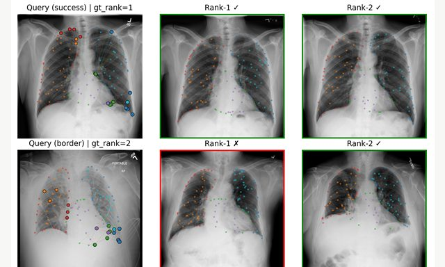
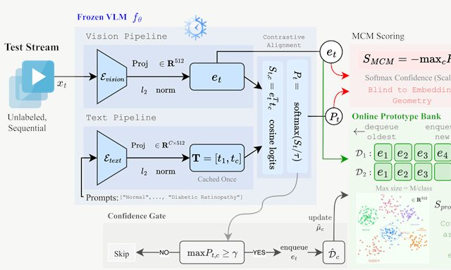
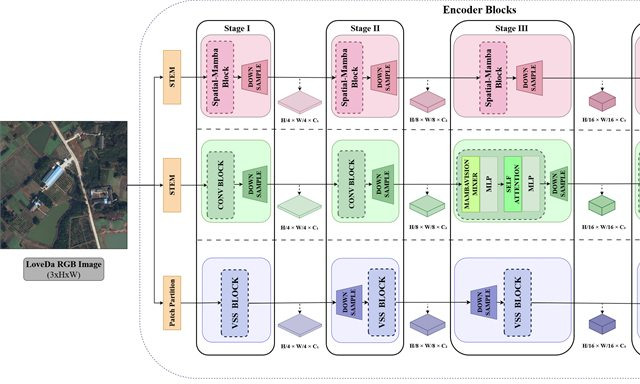
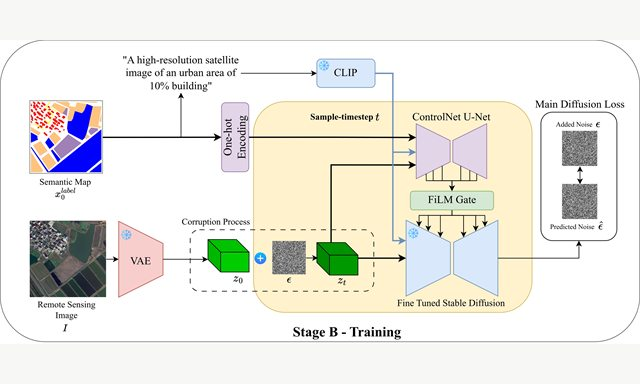
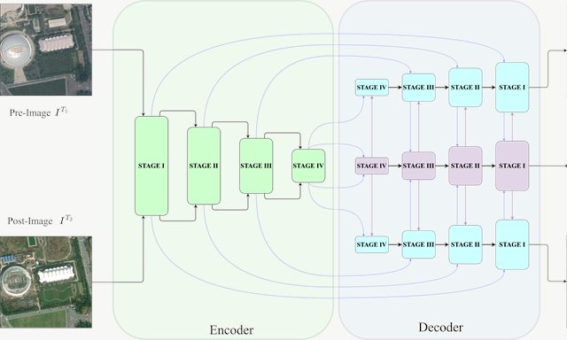
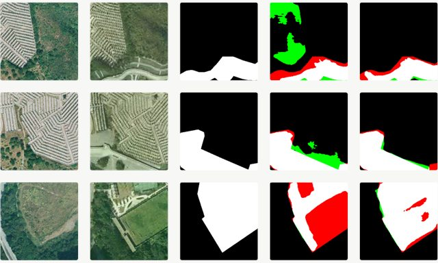
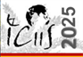

Graph-of-Differences: Anatomy-Structured Difference Alignment for Medical Image Re-Identification
MICCAI 2026 Medical Image Computing and Computer Assisted Intervention, Strasbourg, France Accepted
A curated record of work in trustworthy medical AI, remote sensing, and scientific computing.
Trustworthy learning for medical images and multimodal systems

MICCAI 2026 Medical Image Computing and Computer Assisted Intervention, Strasbourg, France Accepted

MICCAI 2026 Medical Image Computing and Computer Assisted Intervention, Strasbourg, France Accepted
Robust visual learning for Earth observation


IGARSS 2026 IEEE International Geoscience and Remote Sensing Symposium, Washington, DC, USA Accepted

IEEE J-STARS · 2026 IEEE Journal of Selected Topics in Applied Earth Observations and Remote Sensing Published


Machine learning and computational models for physical and biomedical systems